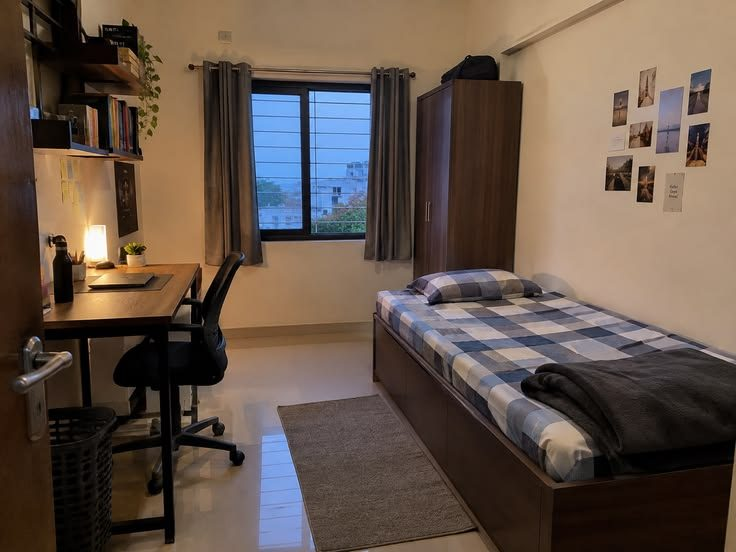

Suas moradias salvas.
Toque no coração de um anúncio para salvá-lo aqui e comparar depois. Os favoritos ficam guardados neste navegador.

Você ainda não salvou nenhuma moradia
Procure um imóvel e toque no coração para guardá-lo aqui.
Encontrar moradia